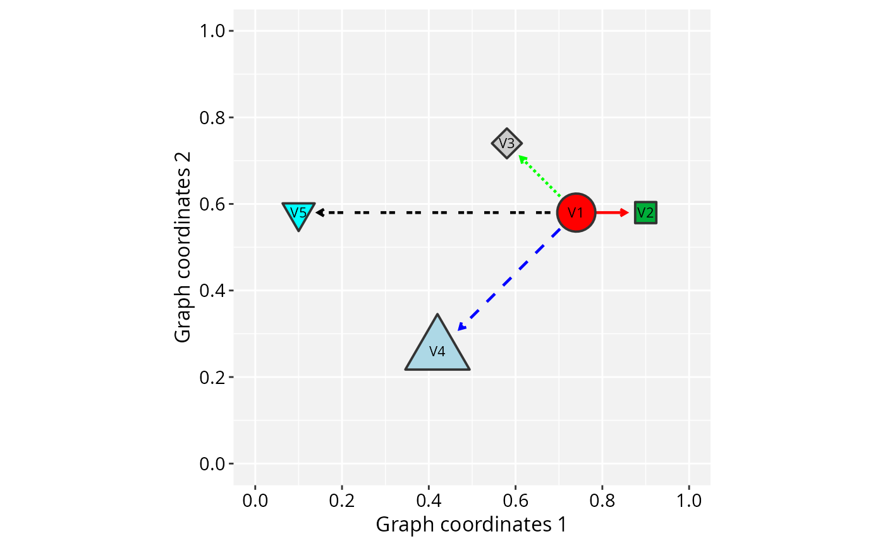
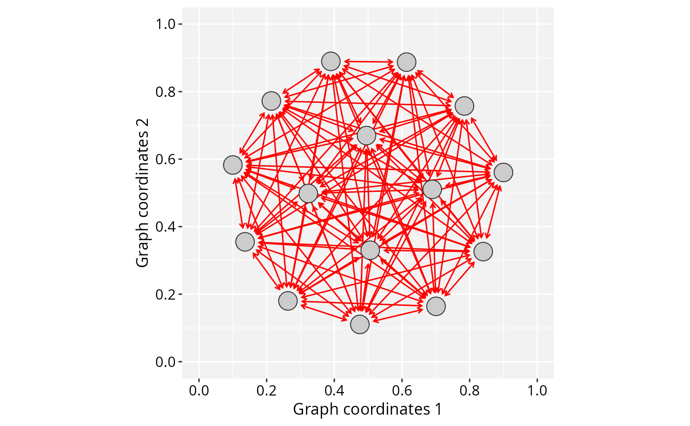

Wrapper function to plot GraphSpace objects in ggplot2
plotGraphSpace-methods.RdplotGraphSpace() is a High-level plotting interface that translates
igraph and GraphSpace data objects into ggplot2 layers.
Usage
# S4 method for class 'GraphSpace'
plotGraphSpace(
gs,
theme = "th0",
xlab = "Graph coordinates 1",
ylab = "Graph coordinates 2",
font.size = 1,
bg.color = "grey95",
add.labels = FALSE,
node.labels = NULL,
label.size = 3,
label.color = "grey20",
add.image = FALSE,
raster = FALSE,
dpi = 300,
dev = "cairo_png"
)
# S4 method for class 'igraph'
plotGraphSpace(gs, ...)
# S4 method for class 'tbl_graph'
plotGraphSpace(gs, ...)
# S4 method for class 'gs_graph'
plotGraphSpace(gs, ...)Arguments
- gs
Either an
igraphor GraphSpace class object. Ifgsis anigraph, then it must includex,y, andnamevertex attributes (seeGraphSpace).- theme
Name of a custom RGraphSpace theme. These themes (from 'th0' to 'th3') consist of preconfigured ggplot settings, which can subsequently refine using
ggplot2.- xlab
The title for the 'x' axis of a 2D-image space.
- ylab
The title for the 'y' axis of a 2D-image space.
- font.size
A single numeric value passed to ggplot themes.
- bg.color
A single color for background.
- add.labels
A logical value indicating whether to plot vertex labels.
- node.labels
A vector of vertex names to be highlighted in the graph space. This argument overrides 'add.labels'.
- label.size
A size argument passed to
geom_text.- label.color
A color passed to
geom_text.- add.image
A logical value indicating whether to add a background image, when one is available (see
GraphSpace).- raster
A logical value indicating whether to rasterize the main plot. See
rasterisefor further specifications.- dpi
Raster resolution, in dots per inch.
- dev
Device used in the
rasterisecall.- ...
Additional arguments passed to the
plotGraphSpacefunction.
Examples
library(RGraphSpace)
library(igraph)
# Load a demo igraph
data('gtoy1', package = 'RGraphSpace')
# Generate a ggplot for gtoy1
plotGraphSpace(gtoy1)
#> Normalizing node coordinates to graph space...

# Create a star graph
gtoy_star <- make_full_graph(15)
# Example of setting node and edge attributes
V(gtoy_star)$nodeSize <- 5
E(gtoy_star)$edgeLineColor <- "red"
E(gtoy_star)$arrowType <- "<->"
# Create a GraphSpace object
gs_star <- GraphSpace(gtoy_star)
#> Validating the 'igraph' object...
#> Vertex attributes 'x' and 'y' missing; computing layout...
#> Vertex attribute 'name' missing; assigning names...
#> Mutual edges detected: Simplified for data frame...
#> Arrows recoded to bidirectional display
#> Edge attributes retained from the first occurrence
#> Creating a 'GraphSpace' object...
# Normalize graph coordinates
gs_star <- normalizeGraphSpace(gs_star)
#> Normalizing node coordinates to graph space...
# Generate a ggplot for gs_star
plotGraphSpace(gs_star)
